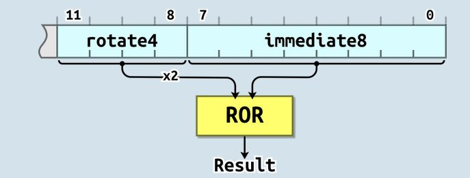

- Fact:
- Registers are the
most important resource inside
the CPU because they
are used as:
- Input operands for all computer operations
So before you can perform a computation with some value, you usually need to:
- Move that value into one of the (general purpose) register first.
We will start learning how to move small integer values into registers.
Then we will learn how to move large (any) integer value into registers.
Next we will learn how to move values stored in memory variables into registers and vice versa.
- Registers are the
most important resource inside
the CPU because they
are used as:
- The mov instruction
is used to
move (= store) a
small integer value into
a (general purpose) register
- The
assembler syntax to
move the value x to
register rN
(any register in the ARM processor) is:
mov rN, #xThe value x will be stored as a 32 bit 2's complement number inside the register rN (X is any number between 0 and 10).
Examples:
mov r0, #4 // Stores 00000000000000000000000000000100 in r0 mov r0, #15 // Stores 00000000000000000000000000001111 in r0
- Example Program:
(Demo above code)

- Prog file: /home/cs255001/demo/asm/2-mov/mov-intro.s on a lab machine
How to run the program:
- To compile: as255 mov-intro
- To run: use EGTAPI
- The ARM processor has a
pretty complicated way to
encode
a number in the
mov instruction.
The format to encode the instruction to move the value x to register number dest is:
mov r0, #x is encoded in ARM as: +-+-+-+-+-+-+-+-+-+-+-+-+-+-+-+-+-+-+-+-+-+-+-+-+-+-+-+-+-+-+-+-+-+-+-+-+ | | | | |0|0|1|1|1|0|1|S|x|x|x|x| dest | value (x) | +-+-+-+-+-+-+-+-+-+-+-+-+-+-+-+-+-+-+-+-+-+-+-+-+-+-+-+-+-+-+-+-+-+-+-+-+ <-----> <-----> <-----> <---------------------> 1 1 1 0 "mov" not used 12 bits unconditional (S = 0 means: don't set the condition codes) (S = 1 means: set the condition codes according to the result of the operation)The mov instruction has only 12 bits to represent the value x.
Without going in the details on how the ARM processor uses these 12 bits to represent numeric values (it uses a very complicated method), you can deduce from the fact that:
- 12 bits is
not enough bits to
represent
all int typed values
Because:
- The int typed values ranges between −231 .. (231−1) which requires 32 bits to represent all of them !!!
- 12 bits is
not enough bits to
represent
all int typed values
-
Postscript:
(only intended for the curious student)
- To satisfy the curiosity of
some students, here's how
the ARM process encodes
a constant using its
12 bits:
 The last 8 bits encodes a 8 bits unsigned binary number
The first 4 bits encodes a "rotation count" - but this count is multiplied by 2:
- If rotate4 = 0, the 8 bits constant is not rotated
- If rotate4 = 1, the 8 bits constant is rotated left 2 positions
- If rotate4 = 2, the 8 bits constant is rotated left 4 positions
- (and so on)
This encoding makes it extremely hard (or impossible) for humans (without using a binary number calculator) to figure out which integer constant can be represented !!!
Reference: click here
Post postscript:
- The ARM processor
may be using more bits to
encode constants since that article was written because:
- I was able to use the constant 0x000001FE (= 510 decimal) in the mov instruction (which was supposed to be illegal according to the article)
As a rule of thumb:
- The mov instruction
can use any integer values that
is in the range of
-100 .. 100
(The range is (a bit) larger that what I have stated above, but the value 100 is easy to remember)
- To satisfy the curiosity of
some students, here's how
the ARM process encodes
a constant using its
12 bits:
- Consider the following
ARM assembler (source) program with 3
mov instructions:
main: mov r0, #4 // Instr code: e3 a0 00 04 (4 is stored in binary!) mov r0, #15 // Instr code: e3 a0 00 0f (15 is stored in binary!) mov r1, #123456 // mov cannot handle very large values // Comment the above instruction to compileAfter assembly (= compiling), the assembler will generate the following machine instruction codes for the first 2 instructions:
Assembler instrcution Machine code ----------------------- -------------- mov r0, #4 --> 1110 0011 1010 0000 0000 0000 0000 0100 (e3 a0 00 04) mov r0, #15 --> 1110 0011 1010 0000 0000 0000 0000 1111 (e3 a0 00 0f) mov r0, #123456 --> Error: invalid constant (1e240) after fixup (123456 = 1e240 Hex)Observe that:
- You can write
a number in
decimal number string text in the
assembler program, and the
assembler will
convert the numeric number in text
format into a
2's complement binary number
I.e.:
- The assembler has used the ASCII to binary conversion algorithm (see: click here ) during the translation process !!!
- Using a large integer value
(such as 123456) will cause
an error
- There is not enough bits in the mov instruction to encode large integer values
So as a rule of thumb:
- You can use the mov instruction on integer values between -100 .. 100
- You can write
a number in
decimal number string text in the
assembler program, and the
assembler will
convert the numeric number in text
format into a
2's complement binary number
- The ARM processor
can use
larger integer values...
Except that:
- It's more complicated and requires 2 instructions
We will learn how to move larger values into a register next...